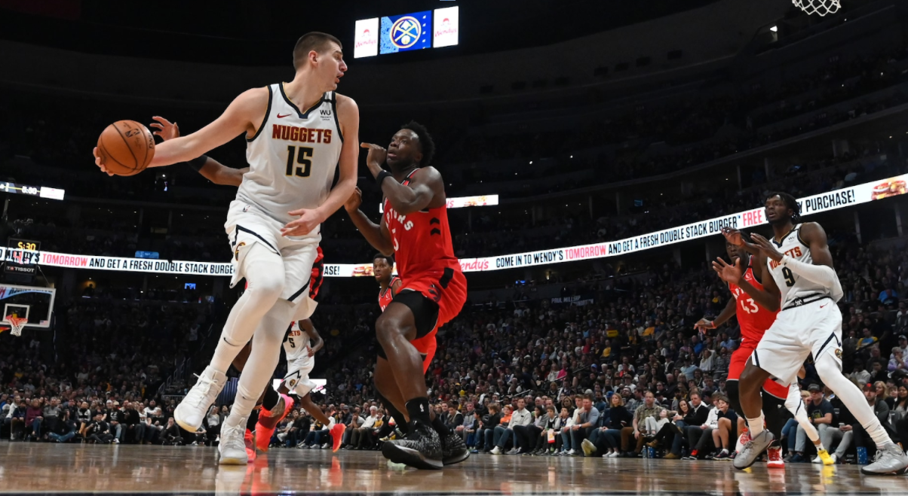

The Renaissance of the NBA Big Man
We’re in the era of positionless basketball. Today, predefined position labels no longer reflect the playstle or utility a player provides to their team. Let’s look at the center position for example. NBA centers…